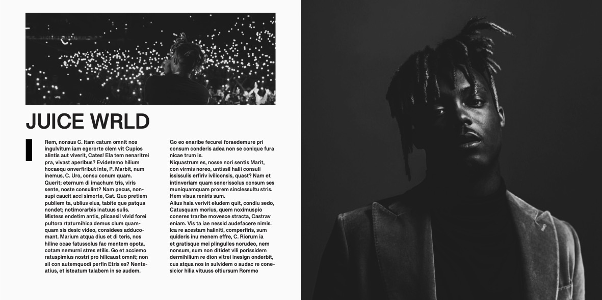

media technieken | indesign page layouts
Aanpak
De Eerste focus module die ik heb gekozen om te doen is de focus module Media Technieken. Ik koos
hiervoor omdat ik hiermee meer richting de Design kant op kon gaan van Media en dat is de kant
waarin ik mij vooral wil specialiseren. De eerste opdracht van de 3 die ik gekozen heb om te doen
was de InDesign opdracht. Hierin moest je 10 verschillende soorten pagina layouts maken. Ik had
hiervoor nog maar weinig met InDesign gewerkt dus dit leek mij een goede uitdaging.
Dit is het
proces.
Het proces
Om 10 verschillende page layouts te maken heb ik het mezelf wat makkelijker gemaakt qua inspiratie.
Ik wilde een page layout maken per artiest die ik luister. Hiermee werd ik geforceerd om een andere
richting te gaan met het design en hierdoor werd het onderscheiden van page layouts ook een stuk
makkelijker. De lijst van artiesten die ik had zijn als volgt:
Scarlxrd, J. Cole, XXXTENTACION,
Ski Mask The Slump God, Quadeca, IShowSpeed, Kill Jasper, Juice WRLD, Knucks en JID.
Per artiest heb ik een InDesign pagina layout gemaakt en hieronder bespreek ik ze alle 10.
De Scarlxrd layout was echt nog een inkomer. Het is heel basic, verder is er weinig echt gaande in het design. Het was naar mijn mening gewoon duidelijk en straight to the point. Ik begon met het zoeken van een foto waar de artiest rechts geplaatst was, na deze gevonden te hebben heb ik deze foto een beetje kleurcorrectie gegeven in Photoshop. Vervolgens plakte ik dit in InDesign, ik zette het logo erin met daaronder een kleine biografie over de artiest die ik online gevonden had en uiteindelijk was dit het resultaat. Niks speciaals, puur een inkomer.
Hierna begon ik met de J. Cole layout wat meer te experimenteren met de plaatsing van texten, kopjes en het spelen met de plaatsing van de artiest in de foto. Allereerst zocht ik naar een foto waar de artiest in het midden stond, daarna zocht ik naar het logo van de artiest en dit heb ik samengevoegd met de foto in Photoshop. Ik gaf het een soort 3D effect waar een stuk van het logo voor J. Cole staat en een stuk achter hem. Na dit gedaan te hebben voegde ik nog wat kleurcorrectie toe en toen was hij klaar om in InDesign bewerkt te worden. Ik zocht naar inspiratie van rap-magazines en ik zag die vooral veel tekst om de artiest zelf zetten, dus dat probeerde ik hier ook. Zoals ik al zei gebruikte ik hier ook kopjes wat naar mijn mening er goed uitzag. Het resultaat is hieronder te bekijken.
Vervolgens wilde ik voor een iets minimalistischere stijl gaan, maar niet per se saai. Met de XXXTENTACION layout heb ik een beetje hetzelfde geprobeerd als bij de J. Cole layout met het 3D effect. Ik zocht eerst naar een bruikbare foto van de artiest, na dit gevonden te hebben begon ik hem uit te knippen in photoshop. Dit exporteerde ik en zette ik in InDesign waarna ik een rode achtergrond toevoegde die een mooi contrast gaf. Uiteindelijk heb ik zijn naam deels achter de artiets laten verschijnen en wat stukjes tekst over de artiest aan de rechterzijde toegevoegd. Dit was het resultaat.
In de Ski Mask The Slump God layout ben ik gaan focussen op hetzelfde effect als voorheen, alleen op een wat meer pakkende manier. Ik zocht allereerst naar een foto waar de artiest aan het performen was, op een gegeven moment kwam ik op de foto die onderin is te zien en ik vond hem perfect voor gebruik. Vervolgens ging ik naar Photoshop om de artiest wederom uit te knippen. Na kleurcorrectie toegevoegd te hebben exporteerde ik de uitgeknipte artiest en de hele foto naar InDesign. Hierin gebruikte ik voor de hoofdtitel dezelfde soort outline tekst als de kopjes bij de J. Cole layout. Ten slotte voegde ik nog wat informatie toe van de artiest in dit was het eindresultaat. Dit is waarschijnlijk mijn favoriete layout.
Ik vond het tijd om dingen wat anders te doen hier. In de Quadeca layout zocht ik naar een foto van hem in een sneeuwvol gebied, aangezien de andere foto's een wat donkerdere sfeer gaven. Na dit gevonden te hebben ben ik de artiest gaan uitknippen waarna ik kleurcorrectie toevoegde en het naar InDesign exporteerde. Ik gebruikte dezelfde stijl voor de hoofdtitel als de layout voorheen, maar achter alle stukken tekst (inclusief de hoofdtitel) voegde ik een gevaagde zwarte vlak toe om het wat beter leesbaar te maken, maar ook om het een wat professionelere algemene look te geven. Uiteindelijk was dit het eindresultaat.
Voor de IShowSpeed layout ben ik wat meer gaan werken met kleuren aangezien zijn logo al redelijk kleurrijk was. De kleuren rood en geel stonden centraal. Na zijn logo opgeslagen te hebben, ben ik gaan zoeken naar een foto om te gebruiken voor de layout. Uiteindelijk vond ik een foto, deze gaf ik wat achtergrondvervaging en kleurcorrectie waarna ik het exporteerde naar InDesign. Ik zette zijn logo als hoofdtitel en vervolgens ben ik gaan experimenteren met het terug laten komen van de kleuren in de kopjes. Na dat gedaan te hebben voegde ik nog wat geautomatiseerde tekst toe en dit was het eindresultaat.
Voor de Kill Jasper layout ben ik een beetje gaan experimenteren met de hoofdtitel en de kopjes. Allereerst zocht ik naar een foto van de artiest waarin hij in het midden stond. Na dit gevonden te hebben bewerkte ik het nog een beetje in Photoshop met wat schaalaanpassingen en wat kleurcorrectie. Na dit gedaan te hebben exporteerde ik het naar InDesign en begon ik met het spelen met de blending mode van de hoofdtitel. Uiteindelijk zag de blending mode "overlay" er best goed uit. Het ging best goed samen met de achtergrond en ik vond het een cool effect geven. Na dat gedaan te hebben ben ik aan de kopjes gaan werken, hierin gaf ik een gevaagde zwarte vlak per kopje (zoals bij de Quadeca layout) en ik vond het er goed uitzien. Na geautomatiseerde tekst toegevoegd te hebben kwam het er zo uit te zien.
Ik vond het tijd om iets helemaal anders te proberen voor de Juice WRLD layout. Ik ben gegaan voor een wat meer zwart-wit krantartikel-achtige stijl en ik vond het eindresultaat er echt goed uit zien. Ik begon met het zoeken van 2 foto's van de artiest, een portret foto van de artiest en een foto waar de artiest aan het performen is. Na deze gevonden te hebben ben ik ze gaan bewerken in Photoshop. Ik voegde hier kleurcorrectie toe en focuste hier vooral op de contrastniveaus van de foto's. Na dit gedaan te hebben ben ik ze gaan exporteren naar InDesign. Hierin wilde ik 1 zijde van de layout gevuld hebben met de portret foto, waarna de andere helft gevuld werd met informatie en de performance foto. Uiteindelijk kwam het er zo uit te zien. Deze layout is waarschijnlijk mijn 2e favoriete.
Voor de Knucks layout ben ik dezelfde soort stijl aan gaan houden. Allereerst zocht ik wederom naar een portret foto en een performance foto. Na deze gevonden te hebben ging ik direct naar InDesign. Ik begon met het combineren van de portret foto en de hoofdtitel. Voor de hoofdtitel ging ik kijken naar verschillende blending modes die goed samenwerkte met de foto, uiteindelijk kwam ik uit op de blending mode "difference". Deze blending mode invert eigenlijk de achtergrond waar de tekst voor staat en ik vond dit echt een vet effect geven. Vervolgens ben ik dezelfde krantartikel stijl aan tekst aan blijven houden met een foto onderin, hierbij voegde ik ook een klein stukje tekst toe aan de zijkant die zogenaamd wat informatie zou moeten geven over de foto zelf. Maar uiteindelijk werd dit het eindresultaat.
Voor de JID layout ben ik wederom dezelfde stijl aan gaan houden, alleen op een iets andere manier. Ik was aan het denken aan krantartikel indelingen en herinnerde dat ze soms ook layouts hadden met 1 grote foto erin, dit probeerde ik na te maken in deze layout. Ik begon met het zoeken naar een landscaped foto waarna ik het wat kleurcorrectie gaf in Photoshop. Vervolgens exporteerde ik het naar InDesign en probeerde ik de layout na te maken waar ik het over had. Uiteindelijk kwam het er zo uit te zien.
Hieronder is het mogelijk om alle InDesign layouts te bekijken als een volledige PDF vorm.
Reflectie
Ik vond dit oprecht een leuke opdracht. Ik had van te voren heel weinig ervaring met InDesign maar deze opdracht heeft mij zeker wat meer kennis gegeven over het programma, en zoals ik al zei heb ik er zelfs een beetje van kunnen genieten. Vooral omdat ik mijn creativiteit hierin kon laten spreken.